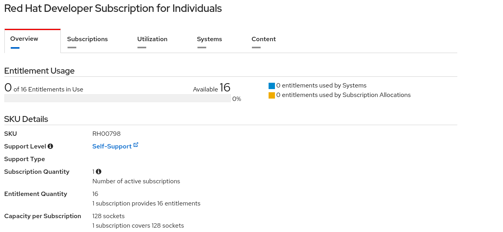

Installation of Ansible Automation Controller or AWX
This document explains ho to install Ansible Automation Controller or AWX on single server, that is suitable for a demo.
Refer to the documentation for HA or more complex setup scenarios.
System Requirements
The following settings are recommended
- x86-64 system,
- 4 vCpus
- 16GB memory
- >20GB in
/home/awx
- >40GB in
/var
For a single demo this can be also smaller. For sizing details or distributed setups see [2].
Ansible Automation Controller
Get the required Red Hat Subscriptions
If you want to use the Red Hat Subscriptions for free you have a couple of options
- You are a Red Hat Partner and you can obtain free test subscriptions (so called NFRs) from the partner center according to your partner level.
- Apply for your free 16-node developer subscription here. This free developer subscription grants access to RHEL and Ansible Automation Hub.
- You or your company has bought the subscriptions for RHEL and Ansible Automation Platform
Installation steps
- Make sure your subscriptions are available and activated at the Red Hat Service Portal. When you click on the developer subscription you should see this screen followed by a list of products. Among them is
Red Hat Enterprise Linux and Ansible Automation Platform:

- If not done, download RHEL 8.4 or later from here
- Install and register RHEL on your server. You will find the Installation Guide at [1]
- Download Ansible Automation platform here
- Attach your Ansible Automation Subscription to the server
- Create credentials for the Red Hat Registry
- Create your Automation Hub Credentials
- Update your Inventory file
- run
setup.sh -i inventory
- Login in and confirm subscription
- Create a Automation Hub/Galaxy Credential
- Assign your credential to the organization
- Assign your organization to the credential
AWX
- Install Fedora or CentOS Stream or RHEL 8.4+
- Install Microshift (RPM version)
- Clone GitHub Operator for AWX
git clone https://github.com/ansible/awx-operator
- Deploy AWX - Follow the instructions on the GitHub page
References
[1] Product Documentation for Red Hat Enterprise Linux
[2] Red Hat Ansible Automation Platform Installation Guide